📱 Первое знакомство с ботом
Что такое ProTires Bot?
ProTires Bot — это умный помощник в Telegram, который анализирует фотографии шин и автоматически определяет их состояние. Он работает как эксперт, который может сказать, хорошая шина или плохая, просто посмотрев на фото.
🔍 Как найти и запустить бота.
Введите название бота: **@ProTiresBot**
Нажмите на найденного бота
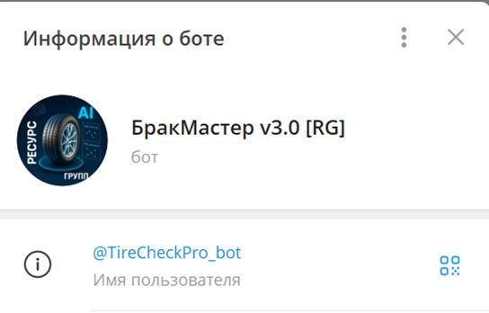
При открытии бота – перед вами будет меню
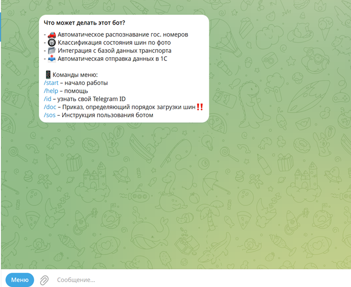
На этом меню перечислены основные команды, которые так же
можно увидеть в «Меню»
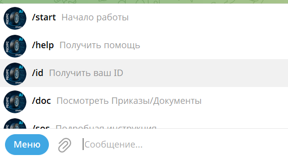
Для начала работы нажимаем /start
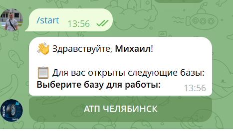
Перед вами открываются все доступные Базы.
На данном примере всего одна доступная База «АТП ЧЕЛЯБИНСК», если баз больше,
то кнопок для выбора будет равное кол-ву баз.
После выбора базы открывается выбор, откуда списывать шины:
СКЛАД или ТРАНСПОРТ
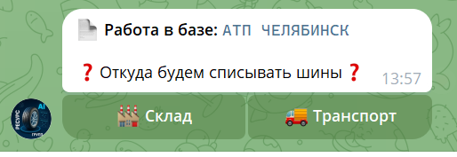
Основное отличие в загрузке
номера автомобиля, с которого списываем шины (одну или несколько).
При выборе «Склад» сразу перейдем к списанию шин.
Выбираем ТРАНСПОРТ:
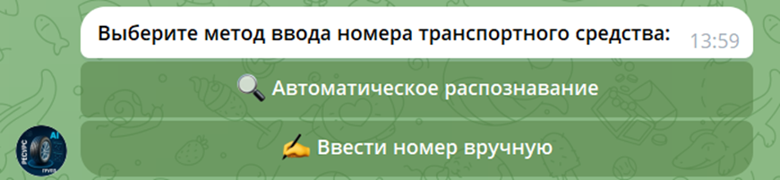
Теперь перед нами открывается возможность загрузить номер
через фото, сделанное с телефона или ввести вручную. Выберем первый вариант:
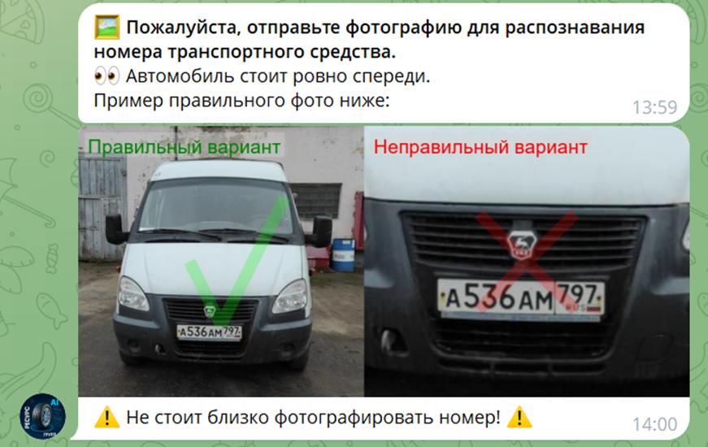
Здесь нужно отойти, чтобы весь автомобиль был в кадре и
сделать фото. Если вы все сделали правильно – у вас появится распознанный
номер:
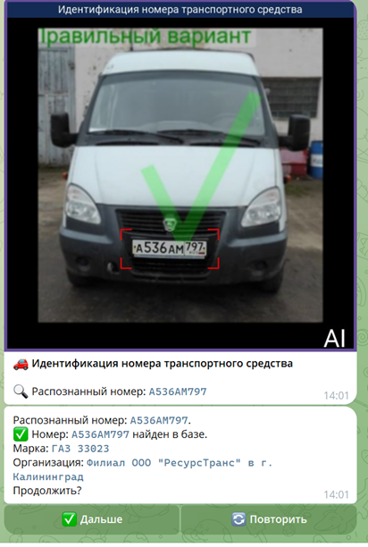
Если номер не правильный можно «Повторить» -
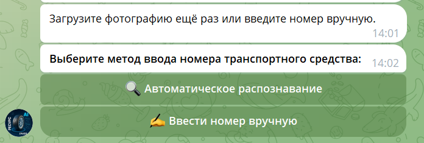
В этом случае действия повторяются. Мы можем сделать еще один снимок или ввести вручную. Для примера, теперь введем вручную:
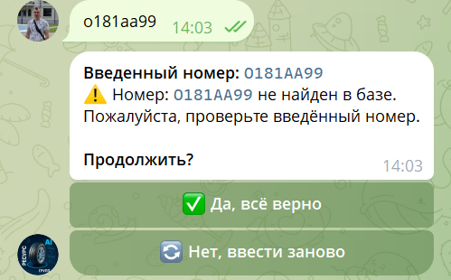
Может быть такое – что мы
получим сообщение, что номер не найден в базе. Это ПРЕДУПРЕЖДЕНИЕ, а не
БЛОКИРОВКА!!!
Если вы уверены в правильности номера, то идете дальше.
После подтверждения номера нужно выбрать кол-во колес.
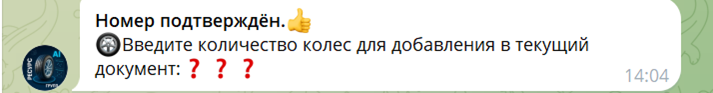
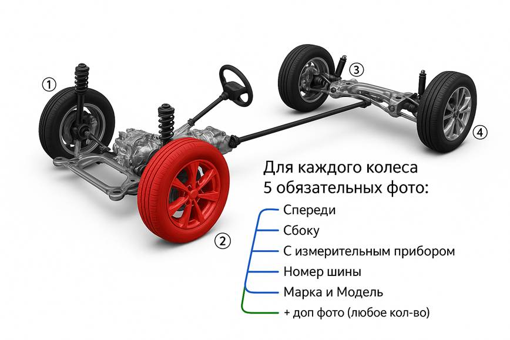
Выберем 2 колеса для списания. (или 2 шины)
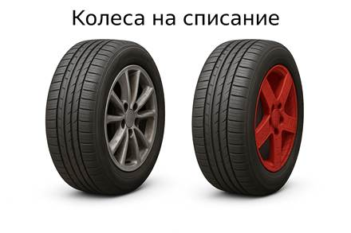
Ниже будет приведена подсказка, что выбрано 2 шины и нужно загрузить 5 обязательных фото.
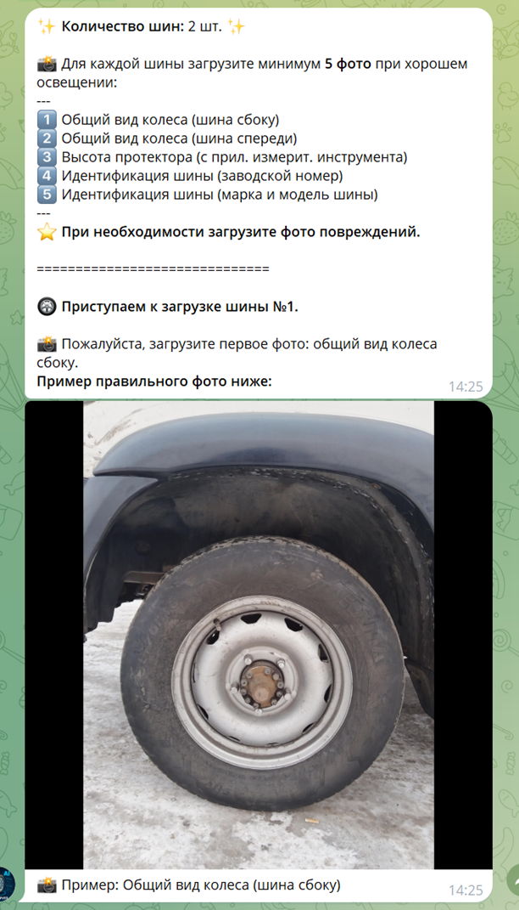
Загружаем 1 фото шины:
На первых двух фото – ШИНЫ ДОЛЖНЫ ОБЯЗАТЕЛЬНО БЫТЬ ПОЛНОСТЬЮ
В КАДРЕ!!!
Если мы при фотографировании прижимаемся к какому-то краю – будет предупреждение.
На фото видно, что мы прижались к правому краю.
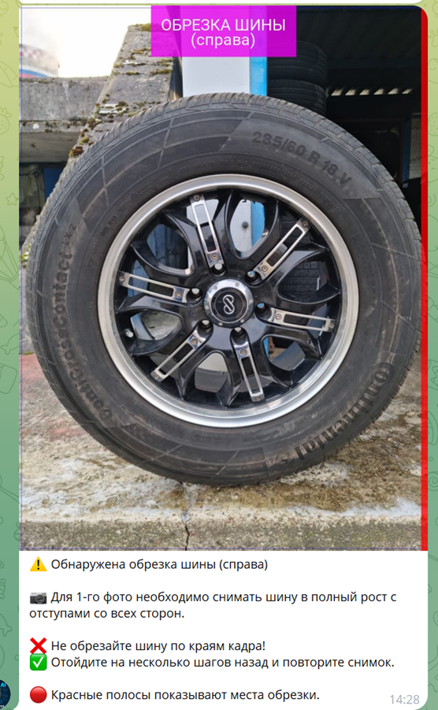
Вот так выглядит правильная загрузка шины:
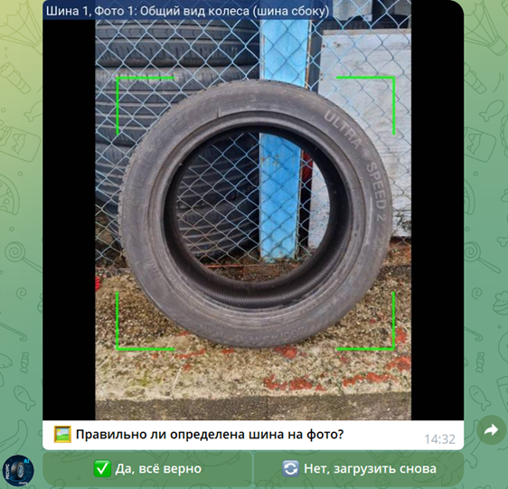
Если все верно (вы сфотографировали не смазано, четко и нужное колесо), то переходим дальше.
Нажимаем «Да, все верно»
Загрузка 2 фото. При этом жирным шрифтом написано, что сейчас мы работаем с 1 шиной
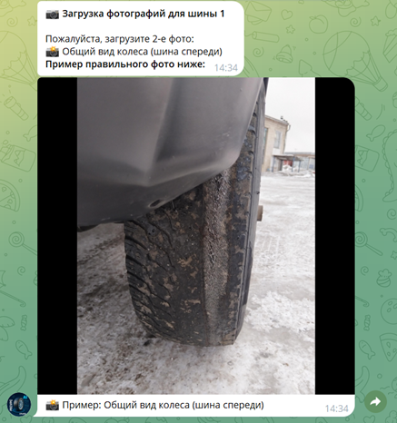
Загрузка шины:
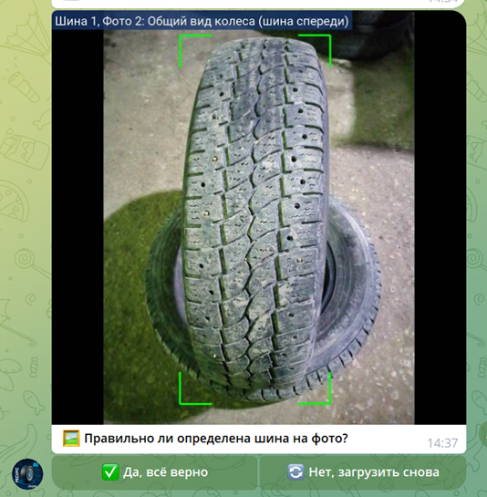
Если у вас при загрузке будет более одной шины в кадре, то выбирается та, которая занимает бОльшее место.
(ВТОРАЯ ШИНА, ТАК ЖЕ ИДЕТ ПОЛНОСТЬЮ В КАДРЕ)
3 фото идет с измерительным прибором. (Все последующие фото можно прижимать по краям)
(Здесь может быть Линейка, обрезанная от нуля или Штангельциркуль)
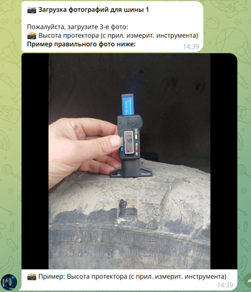
На фото должен быть читаемым и не смазанным измерительный прибор.
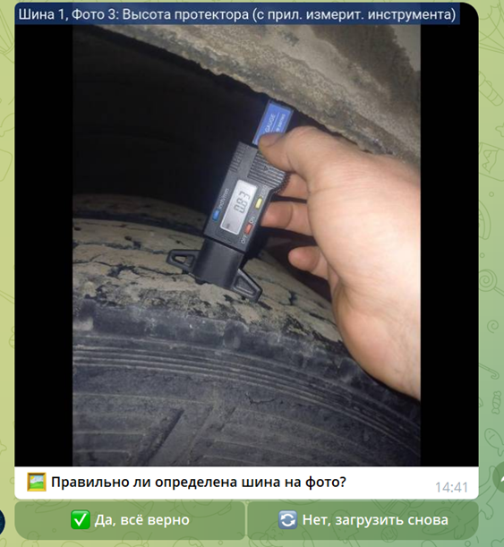
Нажимаем – Да, все верно.
На 4 фото нужно сфотографировать ту часть, на которой
изображен номер шины:
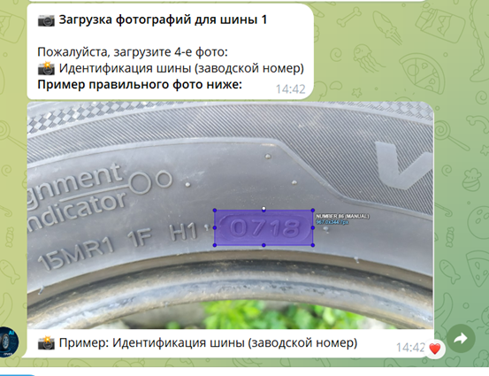
Если будут ошибки распознавания – вы можете ввести вручную:
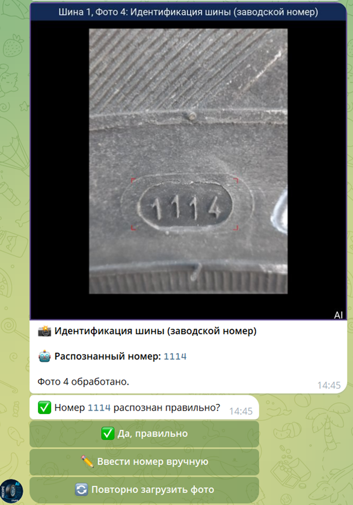
ПРОВЕРЯЙТЕ ПРАВИЛЬНО ВВЕДЕННЫЙ НОМЕР!!!
Загружаем последнее 5 фото шины:
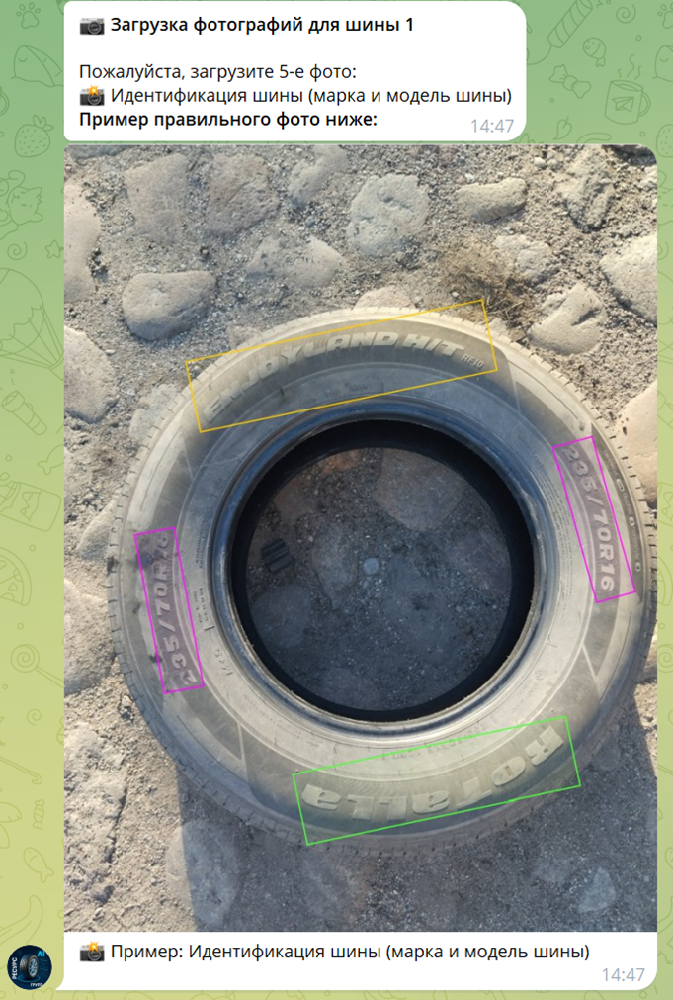
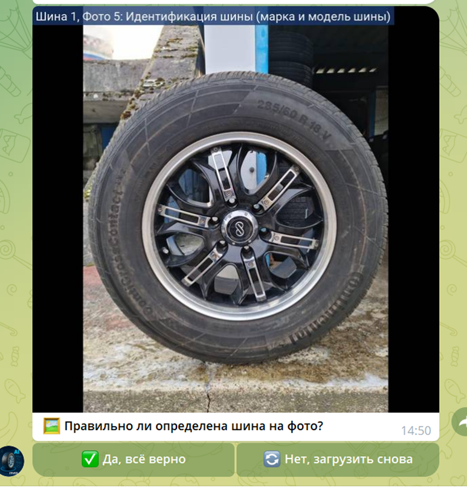
Здесь важно указать Марку и Бренд.
После чего при необходимости можем добавить доп фото для этой шины или переходить к следующей.
Мы можем сфотографировать любую часть крупным планом и догрузить.
Допустим нам нужно загрузить доп фото:
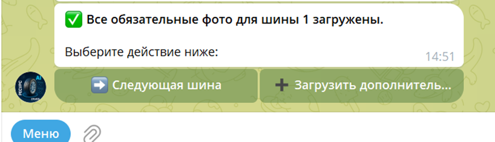
Выбираем «Загрузить дополнительное» и загружаем:
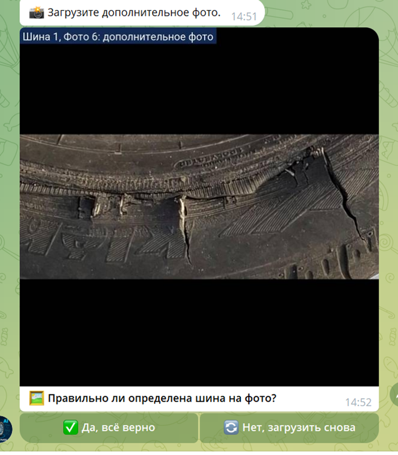
Если нужно можно еще таких фото загрузить, а мы идем дальше….
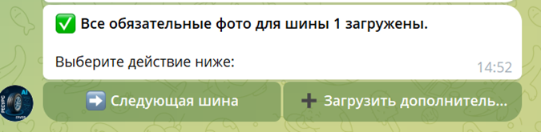
И переходим к следующей шине.
Вверху показывается, что мы перешли на 2 шину и круг повторяется…
В
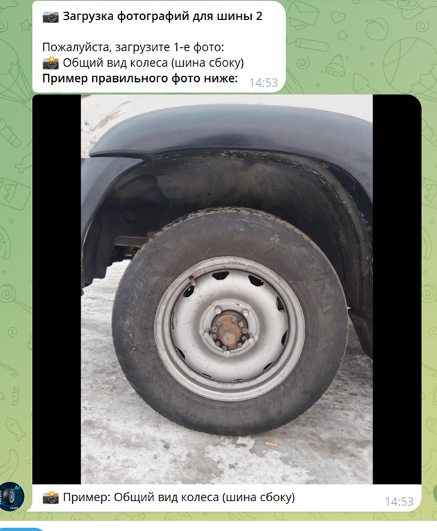
Загружаем 1, 2, 3, 4, 5 фото шины и в конце у нас показывается, что все фото загружены, хотим ли мы добавить комментарий?
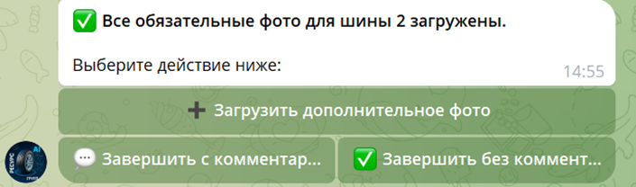
Можем пропустить. Но мы выберем «Завершить с комментарием»:
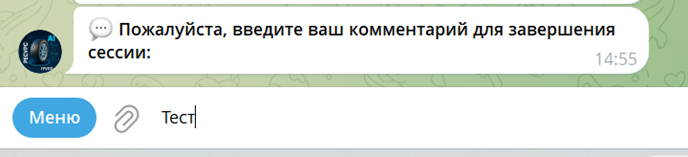
После чего мы можем проверить все наши загруженные фото:
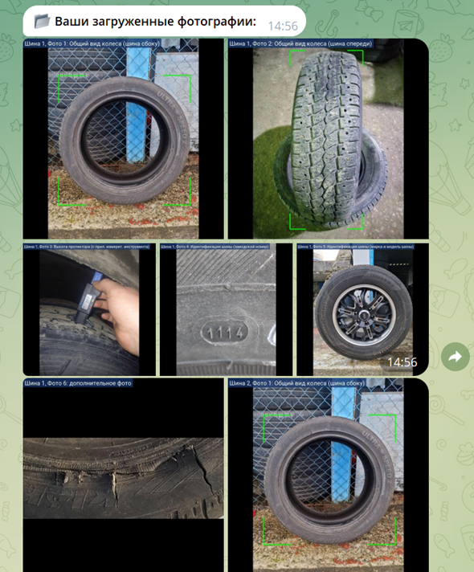
(сокращ. версия)
И в конце если мы уверены, то отправляем данные в 1С:
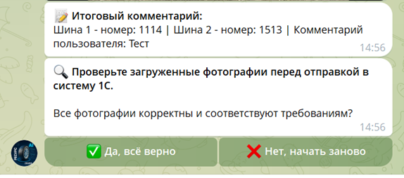
Нажимаем «Да, все верно»
Идет загрузка…
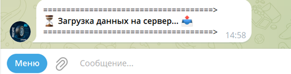
И если вы увидели:
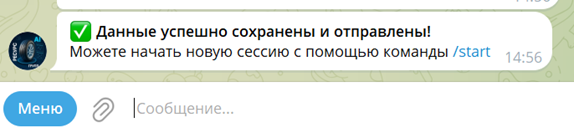
То данные загрузились в 1С систему…
В противном случае нужно обратиться в
━━━━━━━━━━━━━━━━━━━━━
🆘 Служба поддержки
━━━━━━━━━━━━━━━━━━━━━
⚙️ Техническая поддержка сервиса:
👨💻 Титов Михаил Сергеевич
📋 Руководитель разработки нейронных сетей
📧 Email: m.titov@resourcegroup.ru
🕒 Время работы [пн-пт]: 09:00 - 18:00 (МСК)
По вопросам подключения к работе с ботом обращаться:
━━━━━━━━━━━━━━━━━━━━━
🔑 Вопросы по доступу к базам:
👨💼 Стеблев Сергей Вячеславович
📋 Руководитель группы учета шин и АКБ
📧 Email: s.steblev@resourcegroup.ru
🕒 Время работы [пн-пт]: 08:00 - 17:00 (МСК)
👩💼 Чапурина Лариса Николаевна
📋 Заместитель руководителя группы
📧 Email: l.chapurina@resourcegroup.ru
🕒 Время работы [пн-пт]: 08:00 - 17:00 (МСК)
━━━━━━━━━━━━━━━━━━━━━
Для этого вам понадобиться ваш Telegram ID, его можно получить в меню:
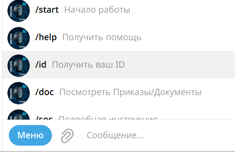 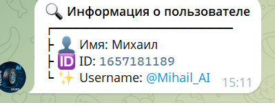
Длинный номер вы передаете для регистрации.